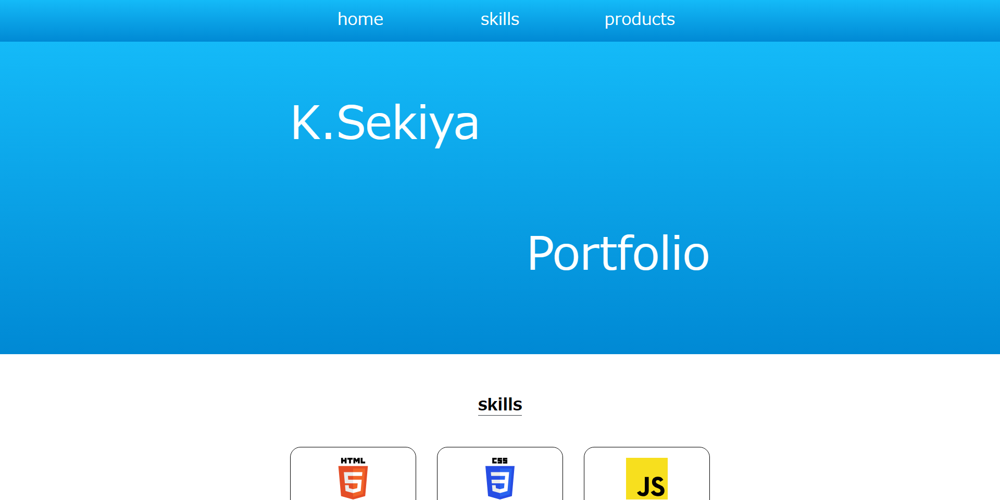

products
自身でHTML,CSSコーディングを一から行いました。サイトに動きをつけるため、JavaScriptを用いてタブメニューやハンバーガーメニューを実装。出張型助産院紹介サイトについては、知人より独立に際し、Webサイトを作ってほしいと相談を受け作成致しました。

ポートフォリオサイト
ポートフォリオサイト
（）
HTML / CSS / JavaScript
本ポートフォリオサイトです。今までの制作物をまとめました。
現在、自身が持てるHTML・CSS・JavaScriptの技術を可能な限り用いてサイト作成を行いました。

出張型助産院紹介サイト
（https://k-sekiya23.github.io/mitsubachi-mw/index.html）
HTML / CSS / JavaScript
クライアントと打ち合わせをしながら希望を聴取し、デザインやレイアウトを決定してコーデイングを行いました。
5月末に最終打ち合わせを行いサイトを公開予定です。